.svg)
Space Industries

Мы объясняем, как устроен космос тремя концепциями. Информация на этом ресурсе проходит несколько этапов перед публикацией:
.svg)
Каждая галактика — не просто скопление звёзд. Это уникальная лаборатория Вселенной с собственной историей, законами и загадками. Здесь вы найдёте не сухие энциклопедические справки, а глубокое погружение в астрофизику через три линзы понимания.
Самый отдалённый объект, видимый невооружённым глазом. В её рукавах звёзды рождаются в 10 раз активнее, чем в нашей галактике. Безупречная спираль без перемычки — эталон того, как выглядят галактики в учебниках.
Гибрид спиральной и эллиптической галактики с гигантским ярким ядром. Знаменитая пылевая полоса создаёт иллюзию космической шляпы. Содержит одну из самых массивных известных чёрных дыр — в 250 раз больше, чем в центре Млечного Пути.
Спиральная галактика с перемычкой, содержащая 100-400 миллиардов звёзд. Мы находимся в одном из её рукавов, в 26 000 световых лет от центра. Каждая звезда на ночном небе — лишь крошечная часть этого грандиозного звёздного города.
Крупнейшая галактика в Местной группе, видимая даже невооружённым глазом как туманное пятнышко. Её двойное ядро скрывает две сверхмассивные чёрные дыры. В 2.5 раза больше Млечного Пути и содержит триллион звёзд.